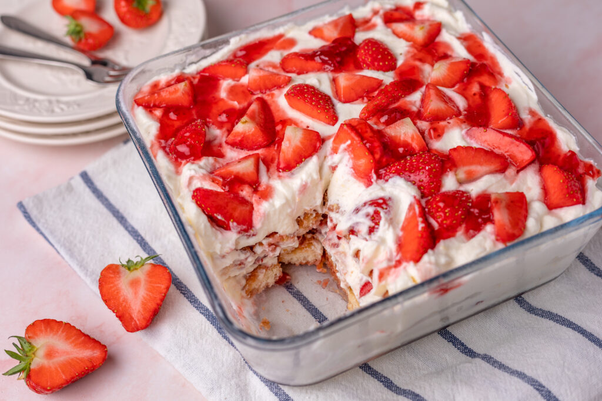

Aardbeientiramisu met citroen
Deze aardbeientiramisu met citroen is heerlijk fris, makkelijk te maken en iedereen kan ervan genieten! Ik maakte hem namelijk zonder alcohol, koffie en rauwe eieren.
Ingrediënten
- 200 gr slagroom
- 100 gr fijne suiker
- 100 gr vloeibaar eiwit, bijvoorbeeld van Two Chicks of Your Daily Protein
- 250 gr mascarpone
- 2 tl vanille extract
- rasp van 1 bio citroen
- 175 gr aardbeienjam, bijvoorbeeld van Bonne Maman
- sap van 1/2 citroen
- water
- 1 pak lange vingers
- 200 gr aardbeien, kroontjes verwijderd
Bereidingswijze
- Klop de slagroom op met de suiker, maar niet te stijf, en zet daarna apart.
- Klop daarna, in een tweede kom, het vloeibare eiwit op tot stijve pieken.
- Roer de mascarpone los in een kommetje met het vanille extract en de citroenrasp. Spatel dit door de slagroom en zet de klopper of garde van de keukenmachine nog even aan tot het net goed gemengd is. Maar klop niet te lang. Spatel daarna rustig de stijve eiwitten erdoor.
- Meng de aardbeienjam met het citroensap en net zo veel koud water tot je een vloeibaar mengsel krijgt waar je de lange vingers in kunt dippen.
- Doop de helft van de lange vingers een voor een in het aardbeienmengsel en leg deze op de bodem van je schaal. Druppel daarna nog wat van het mengsel erover. Verdeel hier de helft van het mascarponemengsel over en strijk glad. Verdeel daarna een laag van plakjes verse aardbei erover.
- Herhaal al deze lagen nog een keer en eindig met grove stukken aardbei, bijvoorbeeld in kwarten gesneden, en druppel nog wat van het laatste deel van het aardbeienmengsel erover.
- Zet de aardbeientiramisu minimaal 4 uur afgedekt in de koelkast voordat je gaat genieten.
